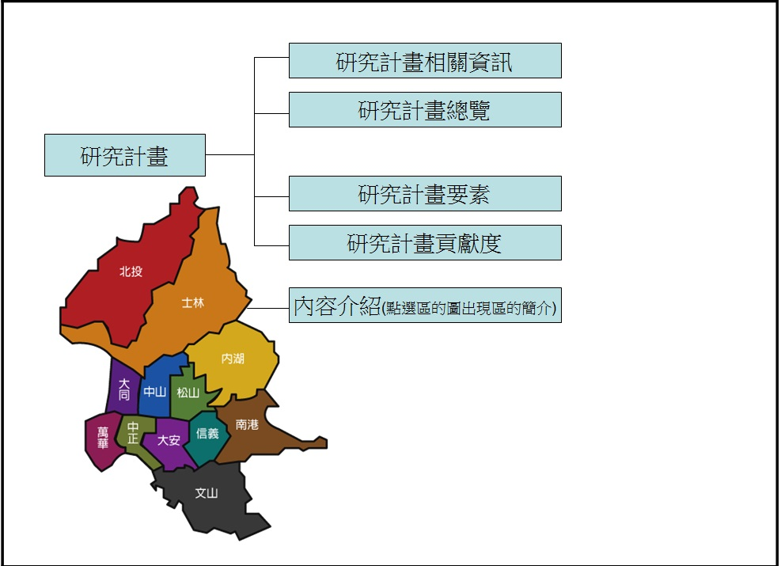

專題資訊
專題計畫完成日期：2016/2/21
學校：臺北市立內湖高級中學
縣市：臺北市 內湖區
指導老師：羅玗貞、劉文玉
學生參與人數：8人
學生年齡：15~16
聯絡 E-mail：hiro890221@gmail.com
競賽類別：觀光資源
研究計畫與內容摘要
常常，我們在這個進步的都市中，會發現一些和現代風格不一樣的建築，但好像常常就這麼走過去了，好像和我們絲毫不相關。於是我們決定開始接觸這些和我們生活年代相差甚遠的老事物。
但是，古蹟非常多，所以我們先從我們所居住的台北市中，每個人撰寫一篇至兩篇自己可能有去過或有興趣的古蹟。目的是希望別人看過我們的介紹後，能引起一點興趣去看看這座古蹟，了解一些歷史。另一方面，我們透過實察各個古蹟，進而深一步的了解，並成為可以帶家人朋友去認識，做一個小導遊的角色。
而這些最終的目的，就是希望藉由大家認識古蹟後，能打開一扇認識歷史的窗子，並打從心底了解維護古蹟的重要，否則，口頭上的維護古蹟，也只是像口號而已。如果每個人都能了解這些意義，想必大家人文素養會越來越進步。而我們幾個的角色，就是推廣，進我們自己微薄的一份心力，轉動進步的齒輪。
計畫流程
貢獻程度
| 參與人員 | 工作內容 | 貢獻度(%) |
|---|---|---|
| 學生 |
鄭名宏：網頁構想、專題簡報、規劃行程、實察 陳俊瑜：網頁設計 陳柏堯：實察 陳柔均：問卷製作、實察 郭維杰：實察 徐孺：實察、網頁總覽 張媛媛：照片拍攝、實察 林彥宇：實察 |
80% |
| 指導老師 | 網頁意見 | 10% |
| 參訪單位 | 提供參訪空間、資訊、照片 | 10% |
研究架構

製作團隊
組長
鄭名宏
什麼都做
組員
林彥宇
實察
徐孺
流程表、網頁架構圖、實察
郭維杰
實察、資料查詢
陳俊瑜
打造網頁
陳柏堯
實察
張媛媛
攝影大哥、實察
陳柔均
實察